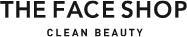
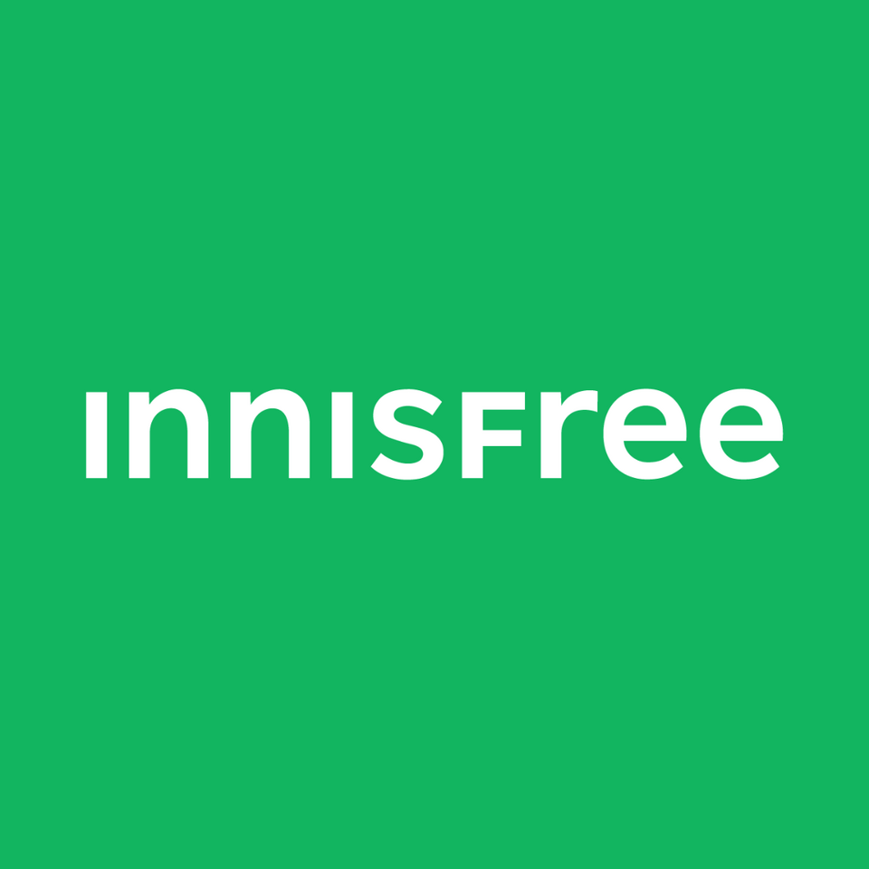
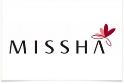
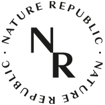
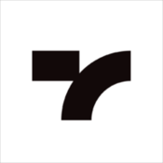
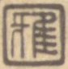

홈 > 브랜드 매거진 > 더페이스샵
더페이스샵
더페이스샵(The Face Shop)은 LG생활건강 계열의 자연주의 로드숍 화장품 브랜드로, 2003년 론칭했다.
산업 분야 뷰티·퍼스널케어 · 공개 등급 자료 기반 · 브랜드 평가 4.2 ★

한눈에 보는 브랜드
더페이스샵은 2003년 서울 명동 1호점과 함께 출범한 자연주의 화장품 브랜드다. 창업 초기 권상우를 앞세운 웰빙 콘셉트로 로드숍 전성기를 이끌었고, 2009년 LG생활건강이 지분 약 90%를 인수하며 대기업 계열로 편입된 것이 첫 전환점이다.
2020년 LG생활건강에 흡수합병되어 독립 법인이 사라진 것이 두 번째 전환점이다. 한때 국내 매출 5천억원대를 넘긴 1세대 로드숍의 대표 주자였다.
브랜드 관점
더페이스샵의 궤적은 자연주의 콘셉트의 선점과 그 우위의 소멸로 요약된다. 2003년 국내에서 자연주의를 가장 먼저 표방했지만, 제주 원료 서사를 정교하게 직조한 이니스프리가 2015년 국내 매출을 추월하면서 같은 자연주의 안에서도 원료 스토리텔링과 청정 이미지의 밀도가 승부를 갈랐다.
LG생활건강 편입은 자금과 유통망을 안겼으나, 단일 브랜드 로드숍 모델 자체가 구조적으로 흔들렸다. 올리브영으로 대표되는 H&B 멀티숍과 인디 브랜드의 부상으로 1세대 로드숍은 2023년 가맹사업을 전면 철수하고 올리브영·쿠팡·다이소 등 입점 채널로 무게중심을 옮겼다.
자연주의라는 자산을 클린 뷰티와 해외 수출로 재해석할 수 있느냐가 한국 K뷰티 재편기 속 향후 관건이다.
시작과 성장
2000년대 초 한국 화장품 시장은 고가 백화점 브랜드와 방문판매가 양분하던 구도였다. 웰빙 열풍과 합리적 소비가 맞물리면서 중저가 단일 브랜드 로드숍이 새 흐름으로 떠올랐고, 더페이스샵은 2003년 명동 1호점을 열며 이 물결의 선두에 섰다.
2005년 무렵 권상우를 모델로 자연주의 콘셉트를 전면화해 폭발적 인기를 끌었고, 2006년부터 미국·중국 등 해외 시장에 진출했다. 첫 전환점은 2009년 LG생활건강의 지분 약 90% 인수로, 대기업 자본과 유통 인프라를 확보했다.
두 번째 전환점은 2012년 씨앗을 자연의 근원으로 삼은 브랜드 콘셉트 재정립이며, 망고씨드·치아씨드 보습 라인이 이 시기 대표 히트작으로 자리 잡았다. 이후 2020년 LG생활건강과의 합병으로 독립 법인 시대를 마감하고 그룹 브랜드로 재편됐다.
브랜드 아이덴티티
브랜드의 핵심 가치는 자연에서 길어 올린 아름다움이다. 여성의 얼굴에서 고귀한 자연을 본다는 출발점 위에, 자연이야말로 가장 절제된 클래식이라는 미학을 내세운다.
비주얼 아이덴티티는 자연의 생명력을 담은 항아리와 풍요의 여신 데메테르를 형상화한 원형 심볼, 그리고 헤리티지를 담은 워드마크로 구성된다. 그린 계열을 기조로 한 절제된 색감과 식물성 원료 중심 패키지가 자연주의 인상을 강화한다.
주 타깃은 합리적 가격에 순한 성분을 원하는 10대 후반에서 30대이며, 브랜드 보이스는 과장 없이 담백하고 정직한 톤을 유지해 클린 뷰티 지향을 드러낸다.
제품과 서비스
제품군은 스킨케어, 클렌징, 마스크, 메이크업, 선케어를 아우른다. 시그니처는 보습 스킨케어인 망고씨드와 치아씨드 라인으로, 치아씨드 수분 로션은 약 1만3,600원, 수분 크림 50ml는 약 1만7,600원, 망고씨드 보습 오일 40ml는 약 2만8,000원 수준이다.
합리적 가격대를 유지하며, 직영 온라인몰과 함께 올리브영·쿠팡·다이소 등 입점 채널, 아마존을 활용한 북미·일본 등 해외 시장으로 유통된다.
현재 상태
모회사이자 운영 주체는 LG생활건강이며, 2020년 합병으로 더페이스샵은 별도 법인이 아닌 LG생활건강 내 브랜드로 운영된다. 본사 기능은 LG생활건강에 통합돼 있다.
LG생활건강의 2024년 연결 매출은 6조 8,119억원, 영업이익은 4,590억원이며 이 중 뷰티 부문 매출은 2조 8,506억원이다. 더페이스샵 단독 매출과 임직원 수는 별도로 공시되지 않아 미공개다.
최근 더페이스샵은 아마존에서 미감수 클렌징 라인을 앞세워 북미·일본 등 해외 채널을 확대하고 있다.
타임라인
정리된 연도형 이벤트가 없습니다.
BI/CI 변천사
함께 읽을 브랜드

뷰티·퍼스널케어 · 자료 기반이니스프리이니스프리(Innisfree)는 아모레퍼시픽이 2000년 론칭한 대한민국의 자연주의 뷰티 브랜드다. 제주 원료를 내세운 스킨케어·색조로 아모레퍼시픽 자연주의 1호 브...
 뷰티·퍼스널케어 · 자료 기반LG생활건강
뷰티·퍼스널케어 · 자료 기반LG생활건강LG생활건강(LG H&H Co., Ltd.)은 화장품·생활용품·음료를 아우르는 한국 기업으로, 현 법인은 2001년 LG화학에서 분할 신설됐다.
뷰티·퍼스널케어 · 디렉토리올리브영올리브영은 대한민국의 헬스앤뷰티 리테일 브랜드입니다. 화장품, 스킨케어, 건강식품, 퍼스널케어 상품을 큐레이션하며 K뷰티 유통의 대표 접점으로 자리 잡았습니다.

뷰티·퍼스널케어 · 자료 기반미샤미샤(MISSHA)는 에이블씨엔씨가 운영하는 한국의 로드숍 화장품 브랜드로, 2000년 온라인 브랜드로 시작됐다.

뷰티·퍼스널케어 · 자료 기반네이처리퍼블릭네이처리퍼블릭(Nature Republic)은 2009년 설립된 한국의 자연주의 로드숍 화장품 브랜드로, 알로에 수딩 젤로 유명하다.

뷰티·퍼스널케어 · 자료 기반토니모리토니모리(TONYMOLY)는 2006년 설립된 한국의 로드숍 화장품 브랜드로, 개성 있는 패키지 디자인으로 알려져 있다.
 뷰티·퍼스널케어 · 매거진 완성러쉬
뷰티·퍼스널케어 · 매거진 완성러쉬러쉬는 영국의 뷰티·퍼스널케어 브랜드로, 성분, 사용감, 패키지, 이미지 언어가 구매 판단에 직접 연결되는 영역입니다.

뷰티·퍼스널케어 · 편집 검수베네피트베네핏 코스메틱스(Benefit Cosmetics)는 1976년 쌍둥이 자매 진·제인 포드가 미국 샌프란시스코에서 창업한 화장품 브랜드로, 1999년 LVMH가 인수...